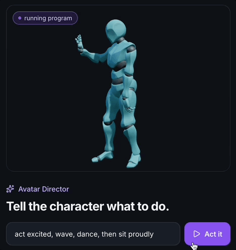
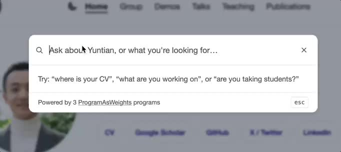
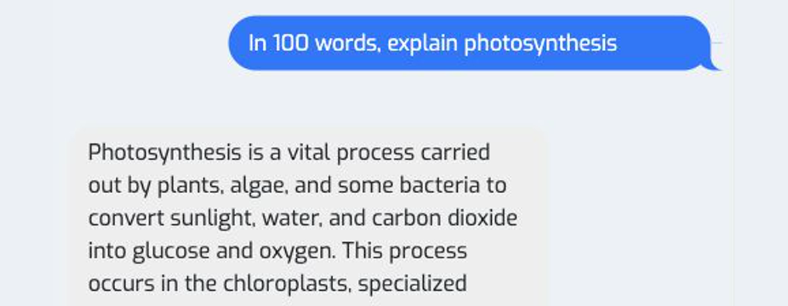

Beyond
ChatGPTWhat else can
AI become?

Yuntian Deng & Bing Yan
Vision 2026 · October 14 · Brantford
I wrote zero code for these slides


Yuntian Deng
Assistant Professor
University of Waterloo
I study new ways to build AI.
AI can learn from demonstrations
Demonstrations
Inputs and
the behavior we want
Training
Predict, compare,
adjust
A new skill
Try it on
new inputs
AI can generate a video
“A gorgeously rendered papercraft world of a coral reef, rife with colorful fish and sea creatures.”

What can AI do
beyond ChatGPT?
This desktop is generated by AI
How is it done?
Break it into one small prediction at a time.


Double-click Home

Then take the next action and repeat.
How does it learn?
Predict
The model guesses
the next screen.
Compare
Check against
the recorded screen.
Adjust
Change the model
to reduce the error.
Repeat with many recorded interactions.
Where does it fail?
Fine-grained interactions
Getting a click or
typed text exactly right.
Persistent memory
Remembering what changed
after a window closes.
A small interaction can go wrong
 Requested: wikipedia.org
Requested: wikipedia.orgCan AI reason
without writing
every step?
Teach the steps. Then take them away.
First, learn
every step.
Remove a little.
Train again.
Remove a little more.
Train again.
Until only the answer remains.
Now try much bigger numbers

Programming
in English
Describe what the program should do
“Given a sentence,
return all the verbs in it.”
“Maya opened the door and smiled.”
Expected outputopened, smiledA real program: direct a character
Try it yourself

“act excited, wave, dance, then sit proudly”
Easy to describe. Hard to write every rule.
I watch birds.
watch is a verbMy watch broke.
broke is the verbTeach it with demonstrations
Find the verbs
“Maya opened the door.”
openedIs it urgent?
“Call now. The room is flooding.”
urgentMany tasks. Inputs. Correct outputs.
The model learns to build the program
“Find the verbs.”
Creates a program
Does it return
the right verbs?
An AI helper on my website

Where does it fail?
Count the r’s in this exact string.
A counting tool gets it right: text.count("r") 5
The reality of the Turing test

AI for
chemistry

Bing Yan
Computer Science PhD candidate, NYU
PhD in Chemistry, MIT
I bring AI and chemistry together.
How could AI help us make a medicine?
Ibuprofen

A reaction changes the connections

What have other chemists already tried?
“How has making
ibuprofen improved?”
Try it yourself
Six reaction steps became three
reaction steps
reaction steps
Is this conclusion justified?
“Half as many reaction steps
means half the production time.”
A Yes
B We need timing data
Did a chemical reaction happen?
 →
→
A Different molecule
B Different shape
Same bonds. Different shape.

EVA-Flow predicts possible molecular shapes
Molecule
+ surroundings
Atoms and bonds supplied
EVA-Flow
Possible
3D shapes
Does the prediction match?
Dataset reference
AI prediction
In a liquid


Near a
protein


When should we look for B?
A → B → C
B may appear only during the reaction
SPARK learns from simulated reactions
Training examples
Known reaction steps
→Simulated signals
Using the model
Measurements
+ conditions
→Possible hidden steps
Can it infer the wrong reaction?
Known simulated reaction
Step 1+Step 2
SPARK’s top proposal
Step 1+Step 2+Extra step
An AI prediction
still needs
a real test.
Try it yourself
How do people
use AI?
What do people actually ask AI?
“In 100 words, explain photosynthesis”
Let’s explore a real conversation

What would you investigate?
Do people ask for
explanations or
finished answers?
You can investigate this too
What would
you build?
How would
you test it?
Your first experiment can be small
One behavior.
A few test cases.
What are you
curious about?
Yuntian Dengyuntiandeng.comyuntian@uwaterloo.ca
Bing Yanbingyan.mebing.yan@nyu.edu
An early model confused hover and click


The missing example: hover without clicking
People use AI around the world

A measurement gives us a clue

Matching answers can still be wrong
ethanol
IUPAC nameCCO
Same molecule. Different text.